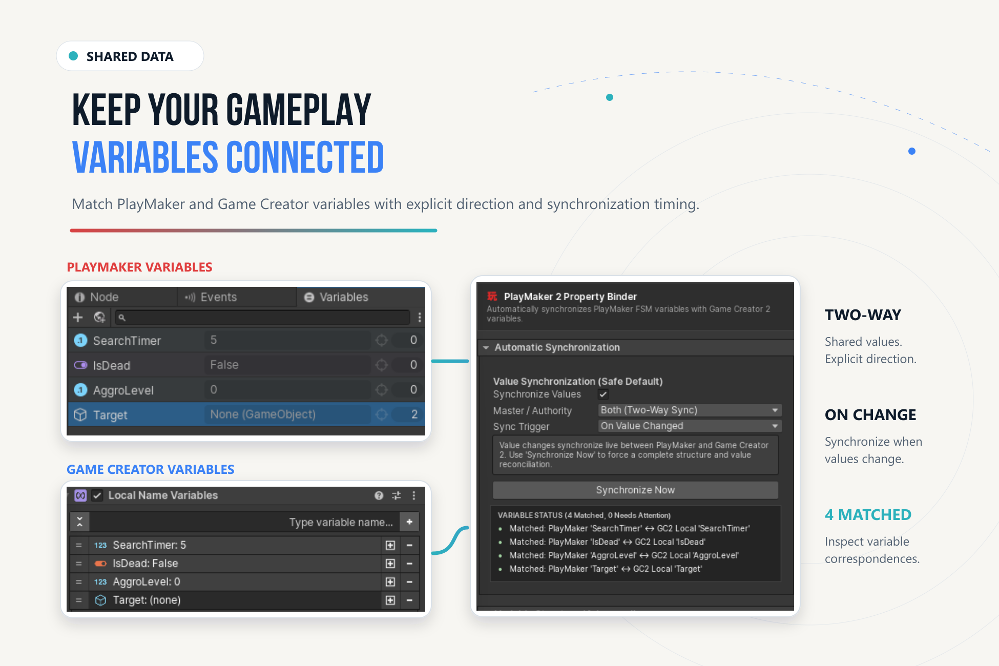

Variables & Property Binder#
Choose between a one-shot transfer and a configured binding. Direct actions and properties do not establish synchronization, create missing variables, or change save ownership.
One-Shot Name Variable Transfer#
- Add GC2 Local Name Variables to the data-owning object, or select a Global Name Variables asset.
- Create a variable with the intended type and exact name, for example
IsOpenas Bool. - In a PlayMaker state, add Set GC2 Name Variable from
Game Creator 2/Variables. - Select scope and store. Enter
IsOpen, choose Bool, and supply the PlayMaker value. - Assign Failure Event if recovery is needed. Read the value from GC2 to verify it.
Use Get GC2 Name Variable for the reverse read. Failed PlayMaker reads retain their previous output; route failure rather than interpreting stale output as a fresh result.
Type Mapping#
| Workflow | GC2 side | PlayMaker side | Policy |
|---|---|---|---|
| Direct Name Variable actions | Bool | Bool | Typed Boolean transfer. |
| Direct Name Variable actions | Number / double | Float | Finite, in-range narrowing. |
| Direct Name Variable actions | String | String | Null text becomes empty. |
| Direct Name Variable actions | GameObject | GameObject | Invalid destroyed references fail. |
| Typed GC2 properties | Number / dedicated Integer selector | Float / Integer | Select the numeric property explicitly. |
| Typed GC2 properties | Vector3, rotation, Color | Vector3, Quaternion, Color | Compatible typed selectors. |
| Typed GC2 properties | Texture, Sprite, Material, Audio, Animation | Compatible object variable | Preserve asset type. |
| Evaluate GC2 Property actions | Native typed PropertyGet | Compatible variable | One-shot; Every Frame is opt-in. |
GC2 Reads and Writes PlayMaker Data#
Choose a typed GC2 property under PlayMaker/Variables. Configure owner, FSM, and variable. Local references use stored identity where available with readable-name fallback; dynamic/manual references require unique names. Global access uses the appropriate PlayMaker global variable asset.
A getter may return the base property's default after a warning. Check diagnostics when zero, false, empty text, or null is unexpected.
Lists and Collections#
PlayMaker actions manipulate Local/Global GC2 List Variables: count, item access, add, set, insert, remove, remove-at, contains, index-of, and clear.
GC2's PlayMaker/Collections utilities operate on PlayMaker collection references and transfer data to/from compatible GC2 lists. Indices must be whole numbers in range. Read-only or fixed-size destinations reject unsupported mutations. Destination and conversion checks precede transfer. See collection utilities.
The PlayMaker 2 Property Binder#
Add PlayMaker 2 Property Binder from Game Creator/PlayMaker 2/PlayMaker 2 Property Binder when ongoing synchronization is intentional. Its runtime type is PlayMakerGc2BindingComponent.

Configure Synchronization#
- Put the FSM and intended GC2 variable store on the authoring object; create compatible variables.
- Add the Property Binder and inspect matched-variable status.
- Choose direction/master authority and trigger. Prefer one direction when one system owns the value.
- Configure explicit rules when automatic matching does not express the connection.
- Enter Play Mode and change the source. Confirm the destination, then inspect Diagnostics/Trace if needed.
Edit Mode and Structure Changes#
Automatic value synchronization runs in Play Mode. Edit Mode previews matches without continuously writing values. Synchronize Now is an explicit authoring operation that can reconcile according to current settings.
Structure synchronization is separate. Mirror Variable Structure defaults off, Structure Master to Keep Both, and deletion policy to Keep and Warn. Review authority and deletion before structural reconciliation; it can change authored variables.
Once deliberately added, the component enables value synchronization by default with explicit two-way direction and source-change trigger. Adding a binder is a meaningful choice; ordinary access does not require it.
Two-Way Changes#
Recursion protection prevents immediate loopback, but two independent writers can still disagree. Define authority. Two-way binding is not a merge system; prefer one-shot boundaries for gameplay transactions.
Persistence#
GC2 and PlayMaker save their own stores according to their own configuration. A copy or binding update does not register data with a save system, mark it saveable, or restore it after loading.